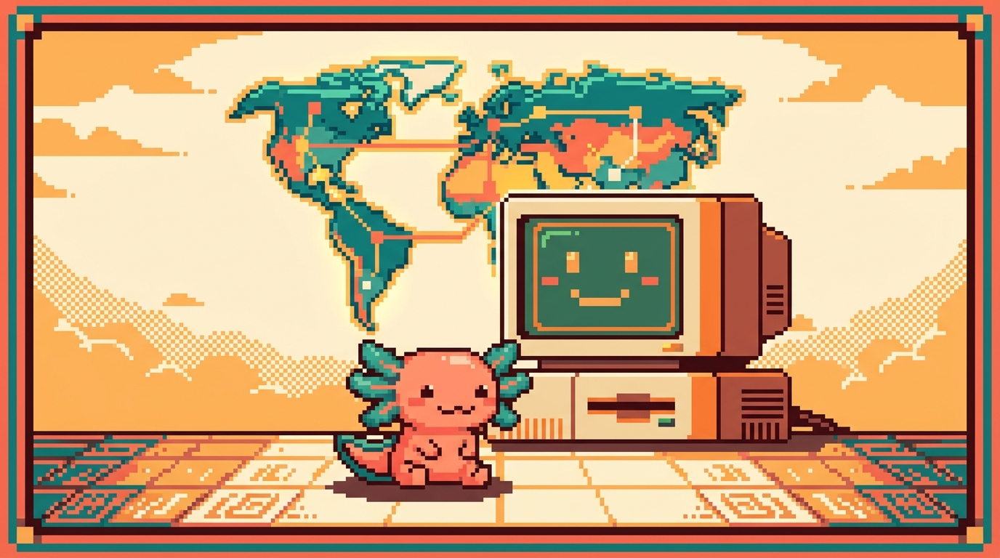

Módulo 00 — Fundamentos

Objetivo del módulo: entender, sin tecnicismos vacíos, qué es programar, cómo funciona una computadora, cómo funciona internet y la web, y aprender a usar las dos herramientas base de todo programador: la terminal y Git. Al terminar, tendrás el "mapa mental" para que todo lo demás encaje.
Este módulo es la base de TODO. Aunque tengas ganas de saltar directo a HTML, no lo hagas: aquí están las ideas que harán que los demás módulos se entiendan solos.
¿Qué vas a poder hacer al terminar?
- Explicar con tus palabras qué pasa cuando escribes una dirección web y aparece una página.
- Distinguir hardware de software, archivo de carpeta, programa de proceso.
- Abrir y usar la terminal para moverte por tu computadora sin el ratón.
- Usar Git para guardar versiones de tu trabajo (como "puntos de guardado" de un videojuego).
- Entender por qué tus proyectos viven en GitHub y qué significa eso.
Capítulos
| # | Capítulo | Qué cubre |
|---|---|---|
| 01 | ¿Qué es programar? | Qué es un lenguaje, código, algoritmo; la mentalidad |
| 02 | Cómo funciona una computadora | Hardware, software, archivos, memoria, el sistema operativo |
| 03 | Internet y la web | Cliente/servidor, IP, DNS, HTTP, qué pasa al abrir una página |
| 04 | La terminal | Qué es, por qué se usa, comandos básicos para sobrevivir |
| 05 | Git y GitHub | Control de versiones, commits, ramas, repositorios |
| 06 | El sistema binario y hexadecimal | Bits, bytes, ASCII/Unicode, hex y los colores |
| 07 | Cómo se ejecuta el código | Lenguaje de máquina, compilar vs. interpretar |
| 08 | El sistema operativo por dentro | Procesos, memoria, sistema de archivos, kernel |
| 09 | Tu taller: VS Code | Instalar y usar el editor, terminal integrada, extensiones |
| 10 | La terminal a fondo | Más comandos, tuberías, permisos, comodines |
| 11 | Git a fondo | Ramas, merge, conflictos, deshacer, .gitignore |
| 12 | Internet a fondo | Paquetes, TCP/IP, puertos, HTTPS y cifrado |
| 13 | Pensar como programador | Descomponer, pseudocódigo, depurar, órdenes precisas |
| 14 | Mini-proyecto guiado | Integrar todo: carpeta, Git, un primer script |
| 15 | Glosario y mapa del módulo | Todos los términos definidos + mapa mental |
✅ Módulo 00 — versión ampliada (capítulos 01–15, ~95 páginas). Es la base de todo el manual.
Antes de empezar
No necesitas instalar nada para leer este módulo. Para los ejercicios de los capítulos 04 y 05 usarás la terminal (ya viene en tu computadora) y Git (te diremos cómo instalarlo).
➡️ Empieza por Capítulo 01 — ¿Qué es programar?.